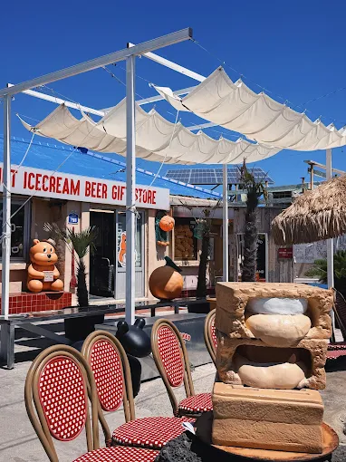
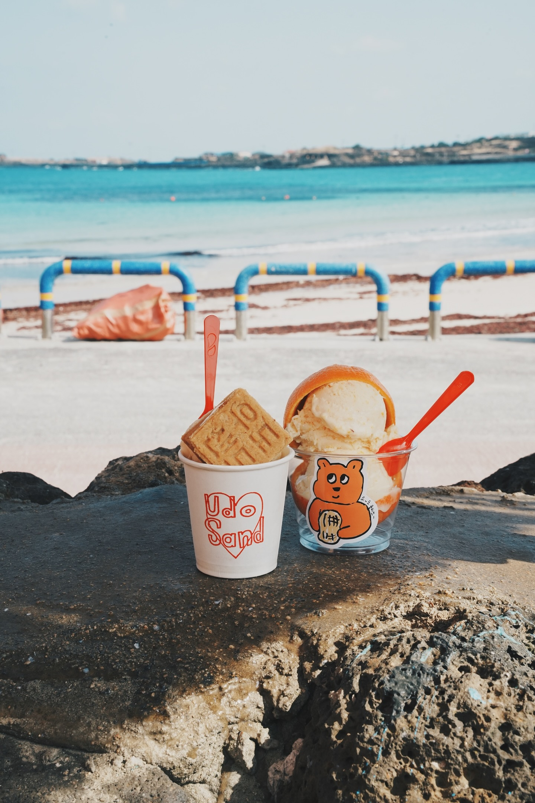
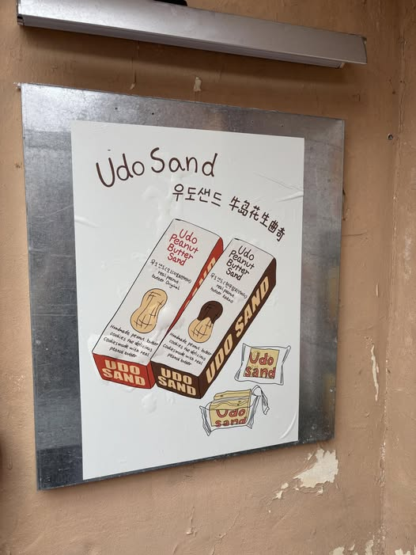
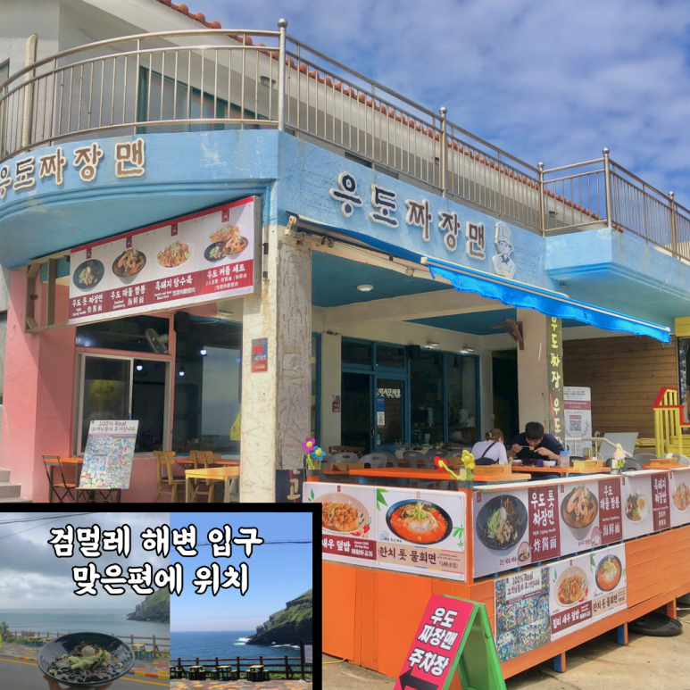
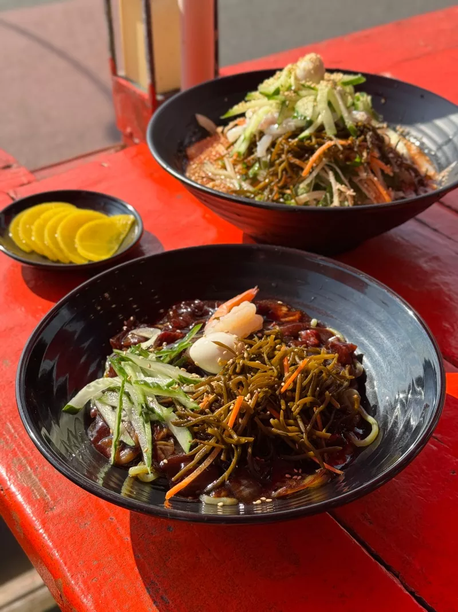
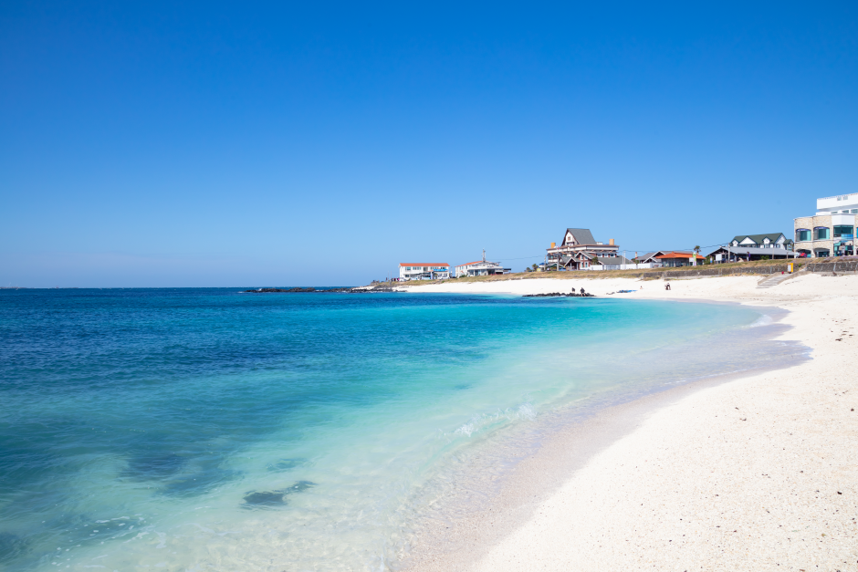
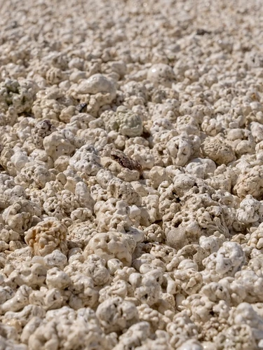
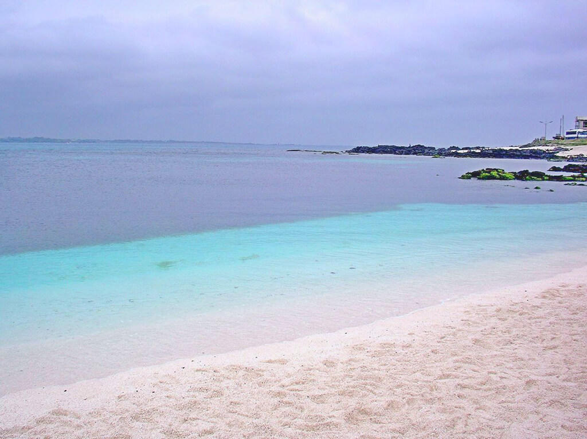

濟州島行程
🍊
Day 04 濟州島-牛島
⛴️ 城山港 ⇆ 牛島 渡船時刻表 (운항시간표)
🗺️城山港 Map
📅
各月份首末班船時間表：
☀️ 5月 ～ 8月（夏季 Peak）
首班 07:00 / 末班 18:30
城山港開往牛島最晚 18:30；牛島返回城山港最晚 18:30。日照時間長，營運時間最長。
🌸 3月・4月 / 🍂 9月・10月（春秋季）
首班 07:30 / 末班 18:00 (9/10月17:30)
3、4月末班船約 18:00；9、10月日落較早，末班船提早至約 17:30。
🍁 11月 ～ 2月（冬季 Off-season）
首班 07:30 / 末班 17:00
天黑較早，末班船為 17:00。冬季風浪大時可能停航，出發前建議確認天候。
💡
搭船貼心提醒：
• 務必預留緩衝時間：建議最晚在末班船開前 30-45 分鐘抵達港口候船，以免排隊人潮過多搭不上船。
• 回程港口彈性選擇：回程不限去程抵達的港口，下牛木洞港或天津洞港皆可搭船返回城山港。
• 務必預留緩衝時間：建議最晚在末班船開前 30-45 分鐘抵達港口候船，以免排隊人潮過多搭不上船。
• 回程港口彈性選擇：回程不限去程抵達的港口，下牛木洞港或天津洞港皆可搭船返回城山港。
🚌 牛島島內交通指南 (우도 교통)
📌
島內交通與公車路線規劃：
1. 汽車管制與慢遊模式
為保護環境與交通安全，僅開放當地居民與特定身分車輛登島。旅客需將租賃車停在城山港，上島後建議體驗「無車慢遊」。
2. 觀光環島公車簡介
下船處即有售票亭
班距約 20~30 分鐘，沿途停靠各大主要景點（如西濱白沙灘、珊瑚沙灘、牛島燈塔、黑沙灘等）。
3. 單 / 雙數日行駛方向
環島公車會根據「奇數日」與「偶數日」決定順時針或逆時針環島行駛，建議購票時確認當天路線以規劃行程。
💡遊覽建議：搭乘環島公車路線清楚不易迷路，非常適合不騎車的旅客；若會騎乘電動車，亦可在港口附近租借電動腳踏車或小三輪車，自由度更高！

牛島近年超人氣的花生甜點專賣店！店面外觀結合可愛的熊熊形象與愛心 LOGO，是造訪牛島不可錯過的打卡景點。店家主打以牛島特產花生製作的濃滑冰淇淋與手作酥脆餅乾，不僅甜點表現精緻，更是採買濟州伴手禮的絕佳去處。
🥜
必點美食與伴手禮推薦：

招牌花生冰淇淋 + 酥脆餅乾
口感濃滑、乳香厚實，透出自然的濃郁花生香氣，甜度拿捏得宜；頂部擺放手作餅乾，外層輕脆、內裡柔軟，咬下便釋放香濃花生餡。

花生酥脆餅乾伴手禮盒
經典的手作花生酥餅可單獨購買盒裝，外包裝精美可愛，非常適合帶回台灣作為濟州牛島特色伴手禮。
💡
貼心提醒：店面周邊拍照非常出片，建議順遊鄰近的下古水洞海水浴場；花生餅乾禮盒為熱門伴手禮，若有購買需求建議提早前往以免售罄。
🍜 牛島炸醬麵 (우도짜장면)
🗺️Map
牛島上相當有人氣的中華風料理店！店內氛圍樸實親切，以濃郁不膩口的韓式炸醬麵深受旅人與在地人喜愛。店家專注於料理本身，將傳統韓式炸醬結合濟州海島特色，展現獨特的風味魅力。
🥢
招牌美食推薦：

特色海帶黑豬肉炸醬麵
醬香濃厚、鹹甜比例恰到好處。最特別的是加入濟州島特產海帶，提升海鮮香氣，搭配彈牙麵條呈現絕妙的豐富口感。
💡
用餐提醒：牛島島上餐館大多配合渡船發船時間營運，通常傍晚前即結束營業，建議安排於中午時段前往享用午餐。

適合外帶
☕ HAKOYA 咖啡廳 (하고야 까페)
座落於牛島下古水洞海水浴場正對面！純白簡約的建築外觀搭配 2 樓全景落地窗，能無死角飽覽湛藍海景與浪花，是牛島上非常適合早晨放鬆、享受海風的質感麵包甜點咖啡廳。
☕
必訪亮點與手作甜點：
牛島花生冰淇淋
採用在地特產花生製作的香濃冰淇淋，以及酸甜開胃的漢拏橘特調飲品，充滿海島特色。
💡
造訪提醒：早上 08:30 即開始營業，若搭乘早班船上島，非常推薦第一站來此享用手作早餐與咖啡，順便避開午後熱門時段的人潮。
🏖️ 西濱白沙 / 珊瑚海邊 (서빈백사)
🗺️Map
名列「牛島八景」之一！以耀眼的白沙灘與翡翠綠漸層果凍海聞名。白沙灘並非一般細沙，而是稀有的「爆米花紅藻石」堆積而成。水質清澈見底，是造訪牛島絕對不可錯過的拍照打卡海景名勝。
🌊
必訪亮點與特色體驗：

爆米花狀紅藻石沙灘
天然紀念物保護
近看像爆米花般可愛的白沙，其實是珍貴的「紅藻石」碳酸鈣結晶。赤腳踩踏感獨特，拍照極具特色。

絕美翡翠綠漸層海景
海水因深淺不同折射出淡綠到深藍的琉璃漸層色，晴天時陽光灑落，呈現如夢似幻的果凍海視覺感。
牛島西側絕美落日
因位於牛島西岸，傍晚回程搭船前非常適合在此靜靜欣賞夕陽沈入濟州本島與漢拏山背後的景色。
💡
遊覽提醒：
• 嚴禁帶走紅藻石：沙灘上的紅藻石為受保護的自然遺產，切勿私自裝袋或帶走。
• 踩踏防護：紅藻石顆粒較大且偶有硬角，建議穿著厚底涼鞋或防滑水鞋踏浪比較不會痛。
• 嚴禁帶走紅藻石：沙灘上的紅藻石為受保護的自然遺產，切勿私自裝袋或帶走。
• 踩踏防護：紅藻石顆粒較大且偶有硬角，建議穿著厚底涼鞋或防滑水鞋踏浪比較不會痛。
🏖️ 黑沙灘 / 黑沙海岸 (검머레해변)
🗺️Map
名列「牛島八景」的天然景致！由火山玄武岩風化形成的細緻黑色沙灘，上方聳立著壯麗的牛島峰懸崖峭壁，崖底更隱藏著神秘的「東岸鯨窟」海蝕洞，展現出與白沙灘截然不同的黑火山粗曠美感。
🌊
必訪亮點與特色體驗：

玄武岩火山黑沙灘
炭黑色的沙粒細緻且帶有些許微溫感，漫步於黑沙與白色浪花交界處，極具視覺張力與海島特色。

下古水洞海女像
座落於下古水洞白沙灘與黑玄武岩交界之處的經典雕像。栩栩如生展現出濟州海女背著網袋與浮球準備入海採集的英姿，背靠著漸層翡翠綠果凍海，是造訪牛島下古水洞時必拍的標誌性人文景點。
💡
遊覽提醒：
• 階梯步道：從上方觀景台前往黑沙灘需走一段較陡陡峭的陡峭木棧階梯，請注意腳下安全。
• 景點串聯：黑沙灘上方的公路旁有多家熱門的花生冰淇淋店（如王子冰淇淋），適合看完景致後來一碗甜點。
• 階梯步道：從上方觀景台前往黑沙灘需走一段較陡陡峭的陡峭木棧階梯，請注意腳下安全。
• 景點串聯：黑沙灘上方的公路旁有多家熱門的花生冰淇淋店（如王子冰淇淋），適合看完景致後來一碗甜點。